class: center, middle .title[Creative Coding and Software Design 1] <br/><br/> .subtitle[Basics] <br/><br/><br/><br/><br/><br/> .date[Oct 2024] <br/><br/><br/> .note[Created with [Liminal](https://github.com/jonathanlilly/liminal) using [Remark.js](http://remarkjs.com/) + [Markdown](https://github.com/adam-p/markdown-here/wiki/Markdown-Cheatsheet) + [KaTeX](https://katex.org)] ??? Author: Grigore Burloiu, UNATC --- name: toc class: left # ★ Table of Contents ★ <!-- omit in toc --> 1. [An "AI Simulator"](#an-ai-simulator) 2. [Variables](#variables) 3. [Operations](#operations) 4. [Conditionals](#conditionals) <!-- Comment out the next slide if you don't want the Table of Contents link --> --- layout: true .toc[[★](#toc)] --- name: an-ai-simulator class: center # An "AI Simulator" [Universal Paperclips](http://www.decisionproblem.com/paperclips/) [(original version)](https://web.archive.org/web/20171009230721/http://www.decisionproblem.com/paperclips/index2.html) - [article about the game](https://if50.substack.com/p/2017-universal-paperclips) / Aaron A. Reed --- class: center ## An "AI Simulator" <img style="width:80%" src="../attachments/paperclips.png"> --- name: variables # Variables e.g. *the number of paperclips* -- memory allocation & types -- | boolean (`true`/`false`) | / | __ bits | |---|---|---| | int | / | 32 bits *(in p5)* | | float | / | 32 bits | | double | / | [64 bits](https://processing.org/reference/double.html) | -- declaration & assignment ```js var x; // declare a new variable "x" x = 5; // assign it a value ``` -- ```js var x = 5; // declare and assign at once ``` -- - p5/Java, Python: *strongly typed*. js: [*weakly/loosely typed*](https://medium.com/@xiaoyunyang/javascript-is-a-loosely-typed-language-meaning-you-dont-have-to-specify-what-type-of-information-137408d54fc7) - p5/Java: *statically typed*. Python, js: [*dynamically typed*](https://pythonconquerstheuniverse.wordpress.com/2009/10/03/static-vs-dynamic-typing-of-programming-languages/) --- ## Paperclips basic algorithm [flowchart](https://www.visual-paradigm.com/tutorials/flowchart-tutorial/) <img style="width:50%" src="../attachments/paperclips-flowchart.png"> -- [p5js web editor](https://editor.p5js.org/) / Processing IDE ```java void setup() { ... } void draw() { ... } void mouseClicked() { ... } ``` --- name: operations # Operations | an **expression** | : | *operand*(s), *operator* | |---------------|---|--------------------------| | is **evaluated** (into) | : | (*result*) | -- ```java clips = clips + 1; ``` - `=` : the *assignment operator* -- ```java 2 + 2 == 5 ``` -- - result: ```java False ``` -- ```java locked = !locked; // "NOT": an unary operator ``` --- ## Logic combining `TRUE` ~ 1 and `FALSE` ~ 0 -- AND -- - `*` -- OR -- - `+` --- class: center name: conditionals # Conditionals  ```java if (condition) { // expression actions(); // operation(s) } else { other_actions(); // ... } ```